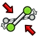
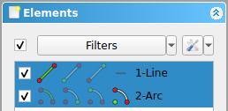

Sketcher Dialog/es
Introducción
Mientras se edita un croquis, o, dicho de otro modo, mientras un croquis está en modo de edición, el cuadro de diálogo Croquizador se muestra en la pestaña Tareas de la Vista Combinada.
Para poner un croquis en modo de edición, consulte Editar Croquis. Para salir del modo de edición, consulte Dejar Boceto.
{kind=link}
{kind=link}
El cuadro de diálogo del croquis tiene las siguientes secciones:
Parámetros de la herramienta
Algunas herramientas añaden una sección de parámetros en la parte superior del cuadro de diálogo. Las opciones y/o modos disponibles dependen de la herramienta.
{kind=link}
Sección de parámetros de la herramienta Croquis, Crear Línea
Edición de croquis
Esta sección informa sobre el estado del croquis.
Los posibles mensajes son:
- Croquis vacío
- Restricciones excesivas: (#, #, #)
- Restricciones mal formadas: (#, #, #)
- Restricciones redundantes: (#, #, #)
- Parcialmente redundante: (#, #, #)
- El solucionador no convergió
- Restricciones insuficientes: <span n grados de libertad
- Totalmente restringido
Si un croquis tiene restricciones insuficientes, se indica el número de grados de libertad. Al hacer clic en el texto subrayado, se seleccionarán los elementos del boceto con restricciones insuficientes. Véase 
{kind=link}
Si un croquis tiene restricciones redundantes o está sobredeterminado, se indican los índices de las restricciones involucradas. Al hacer clic en el texto subrayado, se seleccionarán. Consulte Sketcher SelectRedundantConstraints y Sketcher SelectConflictingConstraints.
{kind=link}
{kind=link}
Las restricciones mal formadas se pueden corregir con Croquis, Validar Croquis.
{kind=link}
Algunos mensajes se muestran en rojo por una razón: son advertencias que no deben ignorarse. Indican problemas que deben solucionarse, ya que interfieren con el solucionador. Los mensajes no son mutuamente excluyentes. Si se aplica más de uno, solo se mostrará el primero de la lista.
Para cambiar los colores utilizados en el mensaje, consulte Ajuste fino.
Opciones disponibles:
| Opción | Descripción |
|---|---|
| x16px | Este botón recalcula el documento. |
| x16px x16px | Este botón abre un menú:
Snapping only works while creating geometry. Note that snapping is just a drawing aid, it does not produce additional constraints. |
{kind=link}
{kind=link}
{kind=link}
Advanced Solver Controls
This section will only appear if you check the Show section 'Advanced Solver Controls' option in the sketcher preferences.
Note that most of the options in this section are of no practical use. They can however help with testing and understanding the solvers.
Available options:
| Option | Description |
|---|---|
| Default solver | The solver that is used for solving the geometry. LevenbergMarquardt and DogLeg are trust region optimization algorithms. The BFGS solver uses the Broyden–Fletcher–Goldfarb–Shanno algorithm. |
| DogLeg Gauss step | This setting is only available for the solver DogLeg. It is the step type used in the DogLeg algorithm. |
| Maximum iterations | If the solver needs more iterations to find a convergence to a solution, it will stop and output that it failed. |
| Sketch size multiplier | If checked, the maximum iterations will be multiplied by the number of parameters. The idea is that bigger sketches would need more iterations to converge. |
| Convergence | The threshold for the squared error. This error is used to determine whether a solution converges or not. |
| Eps/Eps1/Tau | These settings are only available for the solver LevenbergMarquardt. You should only change something here if you fully understand how the LevenbergMarquardt solver works. |
| Tolg/Tolx/Tolf | These settings are only available for the solver DogLeg. You should only change something here if you fully understand how the DogLeg solver works. |
| QR Algorithm | During diagnosing the rank of the matrix is calculated which enables to further analyze the constraint system to determine if there are redundant/conflicting constraints. The rank revealing decomposition used in FreeCAD is QR. There are two algorithms: Eigen Dense QR is a dense matrix QR with full pivoting, which is the legacy proven algorithm that works very well but it is rather slow as the system grows. The Eigen Sparse QR algorithm is an optimization for sparse matrices (having lots of zeros), which is usually much faster, since FreeCAD's systems do have a lot of zeros. |
| Pivot threshold | When doing a QR, values under the pivot threshold are treated as zero. |
| Redundant Solver | The solver that is used during diagnosing to determine whether a group is redundant or conflicting. |
| Red. Max Iterations | The same as Maximum iterations, but for the redundant solving. |
| Red. Sketch size multiplier | The same as Sketch size multiplier, but for the redundant solving. |
| Red. Convergence | The same as Convergence, but for the redundant solving. |
| R.Eps/R.Eps1/R.Tau | The same as Eps/Eps1/Tau, but for the redundant solving. |
| R.Tolg/R.Tolx/R.Tolf | The same as Tolg/Tolx/Tolf, but for the redundant solving. |
| Console Debug mode | Setting to specify the verbosity of the console output. |
| Solve | This button explicitly starts the solver. |
| Restore Defaults | This button restores the default solver settings. |
Constraints
This section lists the constraints in the sketch. Unchecking a constraint in the list will hide it in the sketch. Constraints can be selected in the list as well as in the sketch.
Constraints can also be (un)hidden with Sketcher SwitchVirtualSpace.
{kind=link}
Available options:
| Option | Description |
|---|---|
| Filter | If the Filter checkbox is checked the Filter dropdown list controls which constraints are listed:
|
| This button toggles the visibility of the listed constraints in the sketch. | |
This button opens a menu:
| |
| Context menu | Right-clicking the background of the list, or right-clicking constraints selected in the list opens a context menu. The menu has the following options:
|
{kind=link}
{kind=link}
{kind=link}
Elements
This section lists the elements in the sketch. Unchecking an element in the list will hide it in the sketch. Elements can be selected in the list as well as in the sketch.
Available options:
| Option | Description |
|---|---|
| Filter | If the Filter checkbox is checked the Filter dropdown list controls which elements are listed:
|
This button opens a menu:
| |
Each element in the list has 1 to 4 buttons organized in 4 columns. These select a specific part of the element. Only applicable buttons are shown.
Clicking the text has the same effect as clicking the first available button of the element.  | |
| Context menu | Right-clicking the background of the list, or right-clicking elements selected in the list opens a context menu. The menu contains the Geometric constraint tools, the Dimensional constraint tools and the following additional options:
|
{kind=link}
{kind=link}
{kind=link}
{kind=link}
{kind=link}
{kind=link}
- General: New Sketch, Edit Sketch, Attach Sketch, Reorient Sketch, Validate Sketch, Merge Sketches, Mirror Sketch, Leave Sketch, Align View to Sketch, Toggle Section View, Stop Operation, Grid, Snap, Rendering Order
- Geometries: Point, Polyline, Line, Arc From Center, Arc From 3 Points, Elliptical Arc, Hyperbolic Arc, Parabolic Arc, Circle From Center, Circle From 3 Points, Ellipse From Center, Ellipse From 3 Points, Rectangle, Centered Rectangle, Rounded Rectangle, Triangle, Square, Pentagon, Hexagon, Heptagon, Octagon, Polygon, Slot, Arc Slot, B-Spline, Periodic B-Spline, B-Spline From Knots, Periodic B-Spline From Knots, Toggle Construction Geometry
- Constraints:
- Dimensional Constraints: Dimension, Horizontal Dimension, Vertical Dimension, Distance Dimension, Radius/Diameter Dimension, Radius Dimension, Diameter Dimension, Angle Dimension, Lock Position
- Geometric Constraints: Coincident Constraint (Unified), Coincident Constraint, Point-On-Object Constraint, Horizontal/Vertical Constraint, Horizontal Constraint, Vertical Constraint, Parallel Constraint, Perpendicular Constraint, Tangent/Collinear Constraint, Equal Constraint, Symmetric Constraint, Block Constraint, Refraction Constraint
- Constraint Tools: Toggle Driving/Reference Constraints, Toggle Constraints
- Sketcher Tools: Fillet, Chamfer, Trim Edge, Split Edge, Extend Edge, External Projection, External Intersection, Carbon Copy, Select Origin, Select Horizontal Axis, Select Vertical Axis, Move/Array Transform, Rotate/Polar Transform, Scale, Offset, Mirror, Remove Axes Alignment, Delete All Geometry, Delete All Constraints, Copy Elements, Cut Elements, Paste Elements
- B-Spline Tools: Geometry to B-Spline, Increase B-Spline Degree, Decrease B-Spline Degree, Increase Knot Multiplicity, Decrease Knot Multiplicity, Insert Knot, Join Curves
- Visual Helpers: Select Under-Constrained Elements, Select Associated Constraints, Select Associated Geometry, Select Redundant Constraints, Select Conflicting Constraints, Toggle Circular Helper for Arcs, Toggle B-Spline Degree, Toggle B-Spline Control Polygon, Toggle B-Spline Curvature Comb, Toggle B-Spline Knot Multiplicity, Toggle B-Spline Control Point Weight, Toggle Internal Geometry, Switch Virtual Space
- Additional: Sketcher Dialog, Preferences, Sketcher scripting
{kind=link}
- Getting started
- Installation: Download, Windows, Linux, Mac, Additional components, Docker, AppImage, Ubuntu Snap
- Basics: About FreeCAD, Interface, Mouse navigation, Selection methods, Object name, Preferences, Workbenches, Document structure, Properties, Help FreeCAD, Donate
- Help: Tutorials, Video tutorials
- Workbenches: Std Base, Assembly, BIM, CAM, Draft, FEM, Inspection, Material, Mesh, OpenSCAD, Part, PartDesign, Points, Reverse Engineering, Robot, Sketcher, Spreadsheet, Surface, TechDraw, Test Framework
- Hubs: User hub, Power users hub, Developer hub